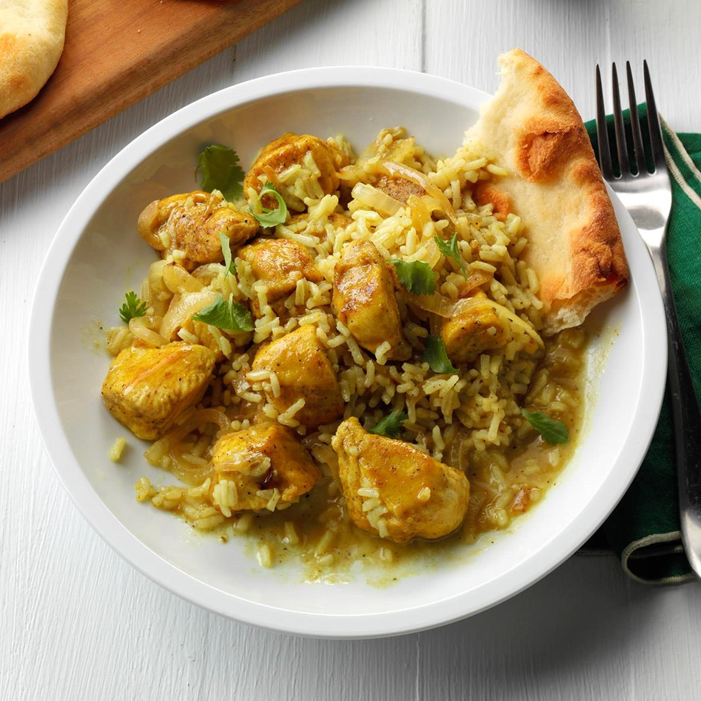

Pancake

I've been loving the subtle spice from curry lately, so I incorporated it into this saucy chicken and rice dish. It's a one-pan meal that's become a go-to dinnertime favorite.
- 2 tablespoons butter, divided
- 1 medium onion, halved and thinly sliced
- 2 tablespoons all-purpose flour
- 3 teaspoons curry powder
- 1/2 teaspoon salt
- 1/2 teaspoon pepper
- 1 pound boneless skinless chicken breasts, cut into 1-inch pieces
- 1 can (14-1/2 ounces) reduced-sodium chicken broth
- 1 cup uncooked instant rice
- Chopped fresh cilantro leaves, optional
Step
- In a large nonstick skillet, heat 1 tablespoon butter over medium-high heat; saute onion until tender and lightly browned, 3-5 minutes. Remove from pan.
- In a bowl, mix flour and seasonings; toss with chicken. In same skillet, heat remaining butter over medium-high heat. Add chicken; cook just until no longer pink, 4-6 minutes, turning occasionally.
- Stir in broth and onion; bring to a boil. Stir in rice. Remove from heat; let stand, covered, 5 minutes (mixture will be saucy). If desired, sprinkle with cilantro.
- When hot, cook your pancakes for 1 min on each side until golden, keeping them warm in a low oven as you go.